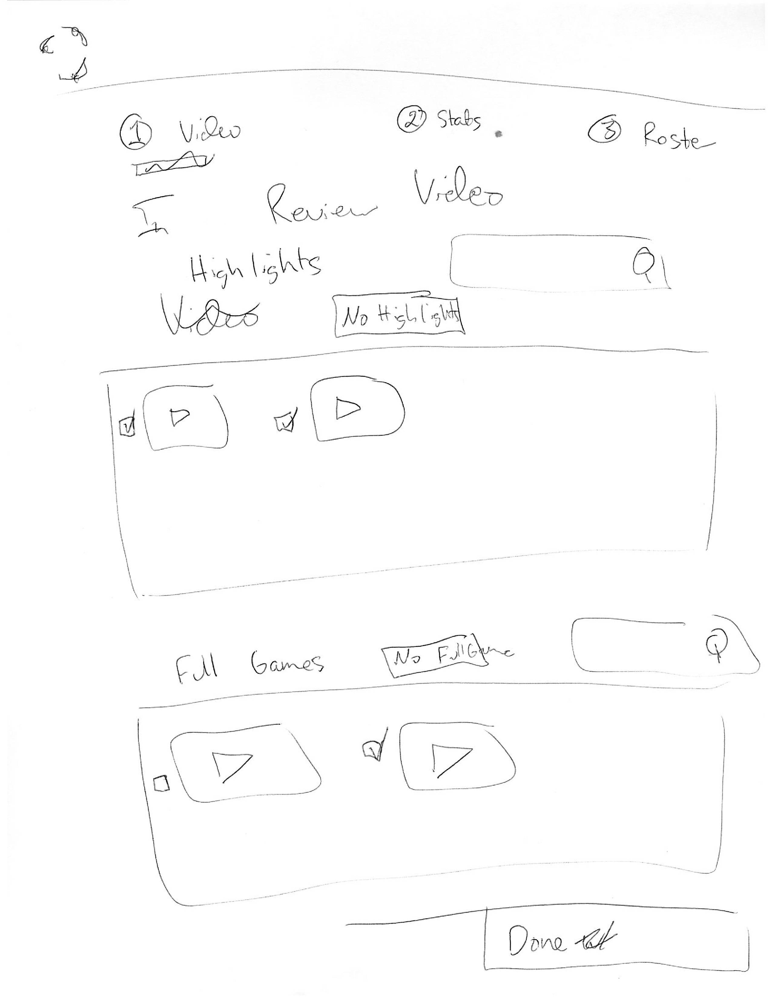
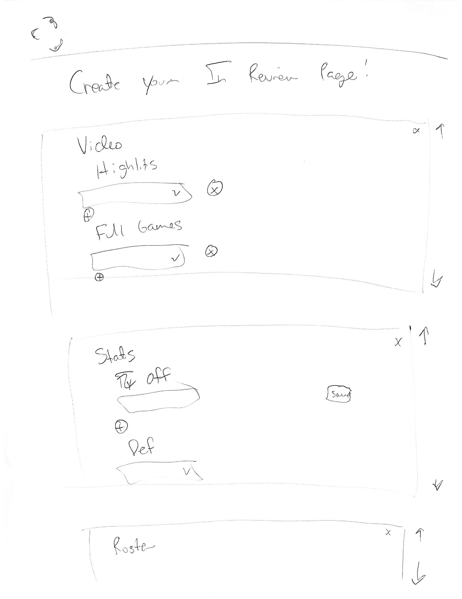
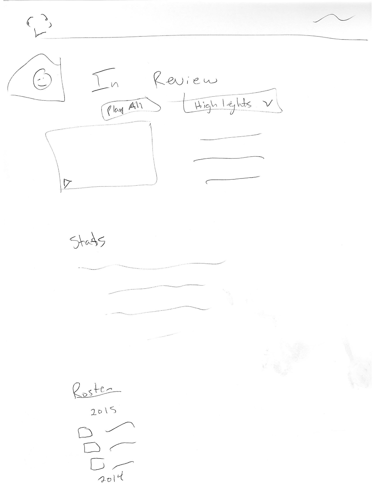
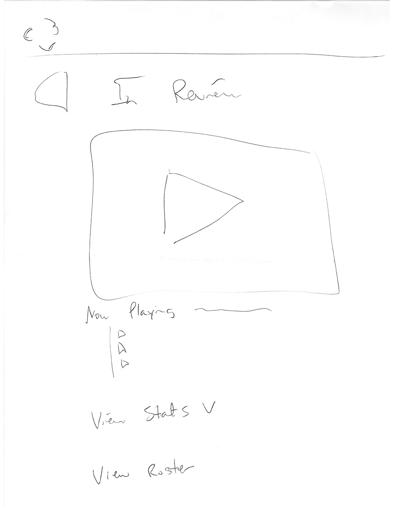

The HudlU UX for Non-Designers certification was a 3 week class of one hour sessions that finished with a final project referred to as "The Gauntlet". "The Gauntlet" was an in class test where the Hudlie was presented with a problem then given ten minutes to have a user interview in order to find out more about the problem, before having a ten minute sketch session to create a low-fidelity prototpe for a solution to the problem. There was then five minutes to explain their sketches to a Hudlie Designer, proctoring the test, and five minutes for feedback.
Notes: As a non-designer, these sketches are very rough, and very low fidelity. Also, any Hudl logos or design elements are intellectual property of Agile Sports Technologies, Inc.
Hudl's longterm goal is "to capture and bring value to every moment in sports." however, as stated by my instructor, “Hudl provides no value to athletes after they graduate.” Athlete alumni are currently able to log into their Hudl accounts to view their old highlights, but Hudl does not actively reach out to keep them engaged in using the Hudl product after they graduate. I had ten minutes to interview a high school athlete alumni, Jessica, which was actually just another Hudlie in my class. For their final they had interviewed me while I pretended to be a high school coach who wanted a better way to give out "homework" on Hudl, or film I wanted my athletes to watch.
Overall my idea was for an Athletic "In Review" page. I thought the first way to start alumni engagement on Hudl would be a way to bring together and show off all of the achievements of their athletic career. This notion was inspired by Jessica saying during our user interview that she had spent a lot of time on Hudl when she was in high school helping her friends make highlights, or tagging highlights of her own. Since graduating she would still check out some of her younger colleagues' video whenever it seemed like a particularly interesting highlight had gotten shared to Facebook.
In order to be thorough in my sketching session, I sketched two aspects of the "In Review" page: it's creation by the alumni athlete, and the finished product. Furthermore, I tried to get out multiple ideas for each aspect. In early, low-fidelity prototype creation and validation exercises it's best to come up with as many ideas as possible, test to see which works best, and then iterate/repeat on that idea to further hone down the product.
In order to have low friction in page creation and accomodate all levels of engaged alumni (super engaged vs more apathetic) I tried to make each page creation process as simple as possible.
Here the alumni would have boxes autofilled with all of the types of video they have. They can check which, if any, videos they want to display on their page, and also have a search bar to more easily search for a specific video. At the top of the page they are shown what step they are on in the page creation process, and have a large "Done" button on the bottom of the page to send them on to the next step.

Here I went with a different, more "LinkedIn" style approach. I added this page creation process because I wanted to accomodate
that different alumni may have varying interest on different aspects of Hudl (stats vs video, etc.) The alumni can add or delete any
aspect on the page and drag it to what position (first, second, etc.) they wanted on the page.

Here all of the aspects default to visibile, and anyone viewing the page can click through the video picker to look through an alumni's video (highlights, as on many other athlete pages within Hudl, is the default) or hit the "Play All" button to play through all video (beginning with highlights).

Hudl's biggest asset is video, and one of their product vision statements is "Give me my damn video." Knowing that, I added this potential version to my sketches to give more page real estate to the video player while still having the option to expand the other regions.
